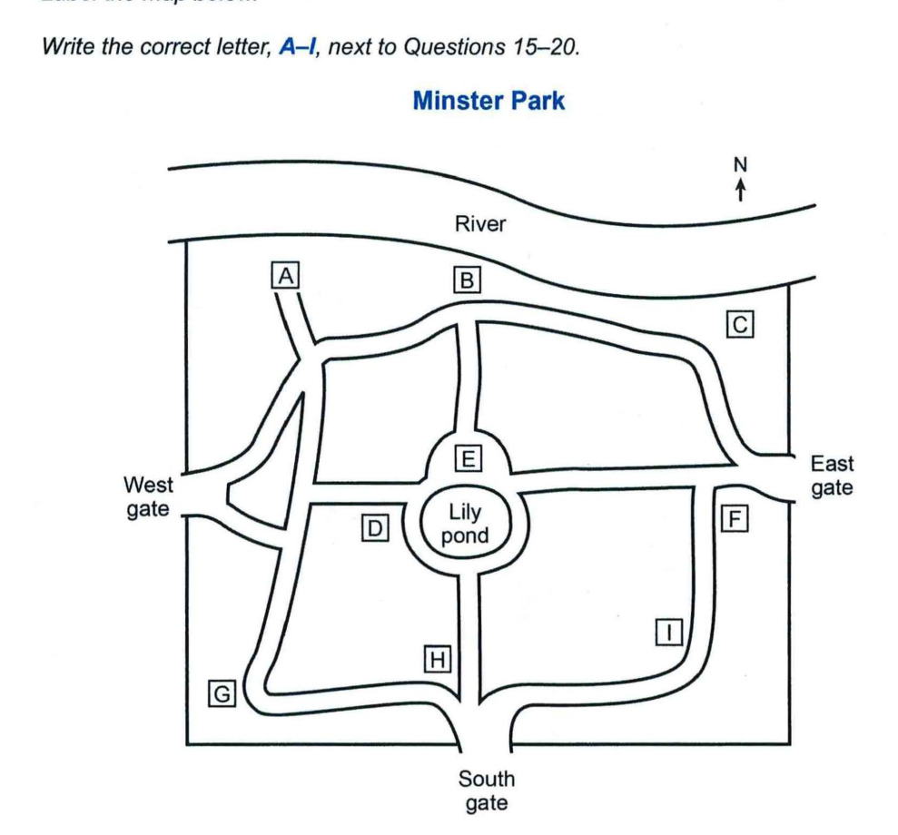

Cambridge IELTS 15
Time: approx. 30 minutes
Instructions
Digital recreation of Cambridge IELTS Listening Test 2.
Type answers in the gaps. Click options for multiple choice.
Print this page for paper-like practice.
Questions 1–4: Complete the table below. Write ONE WORD ONLY for each answer. Questions 5–10: Complete the notes below. Write ONE WORD ONLY for each answer.
Questions 1 – 4
Complete the table below. Write ONE WORD ONLY for each answer.
| Date | Type of event | Details |
|---|---|---|
17th |
a concert |
performers from Canada |
18th |
a ballet |
company called1 |
19th–20th (afternoon) |
a play |
type of play: a comedy called Jemimahas had a good2 |
20th (evening) |
3show |
show is called4 |
Questions 5 – 10
Complete the notes below. Write ONE WORD ONLY for each answer.
| Section | Details |
|---|---|
Workshops |
Making5food(children only) Making6(adults only) Making toys from7using various tools |
Outdoor activities |
Swimming in the8Walking in the woods, led by an expert on9See the festival organiser's10for more information |
Questions 11–14: Choose A, B or C. Questions 15–20: Label the map A–I.

Questions 21–22 and 23–24: Choose TWO A–E. Questions 25–30: Matching A–H.
Click to select (max 2)
Click to select (max 2)
Complete the notes below. Write ONE WORD ONLY for each answer.
IELTS Listening Test 2 • Cambridge IELTS 15 • Practice recreation (content from official PDF)